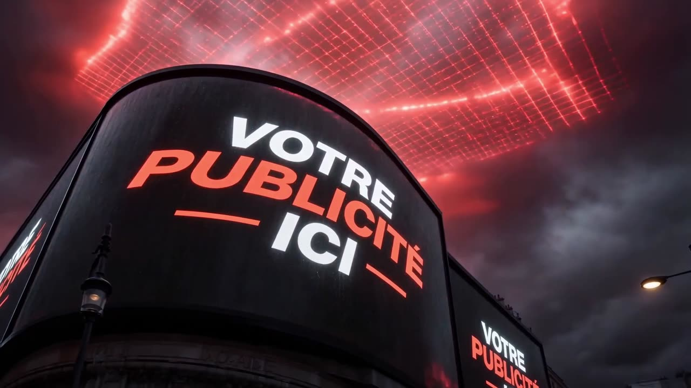
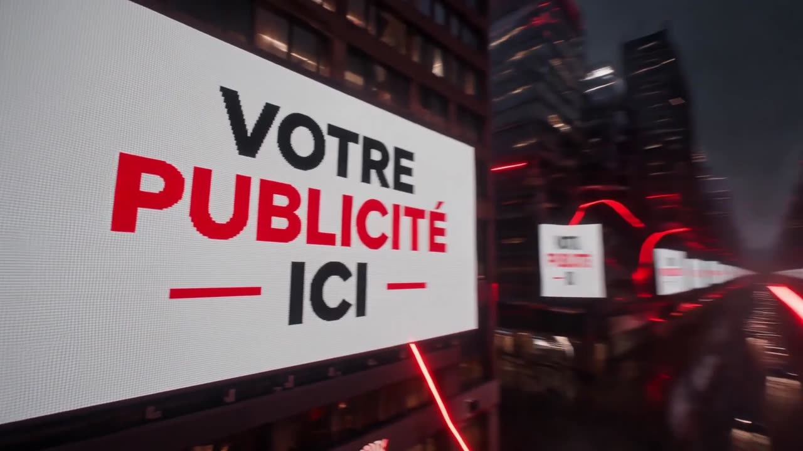
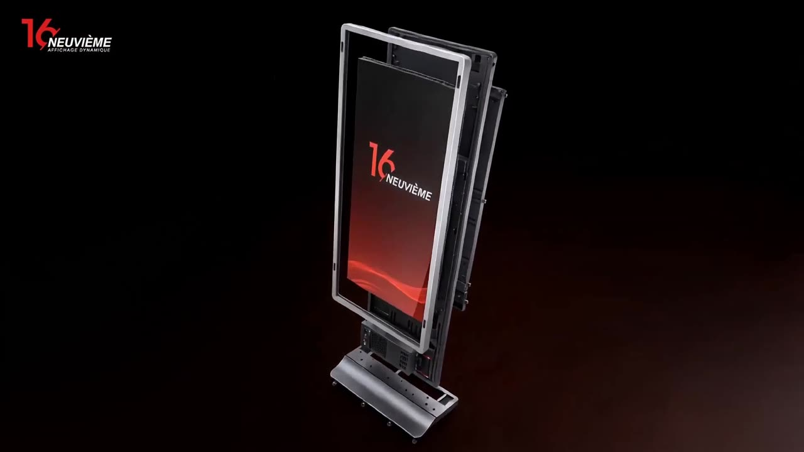
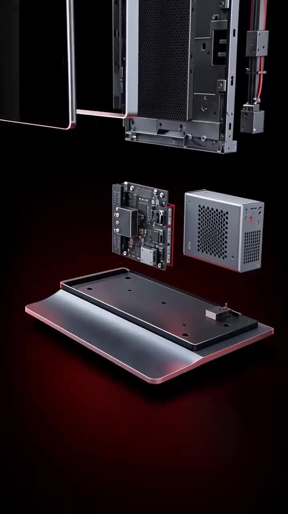
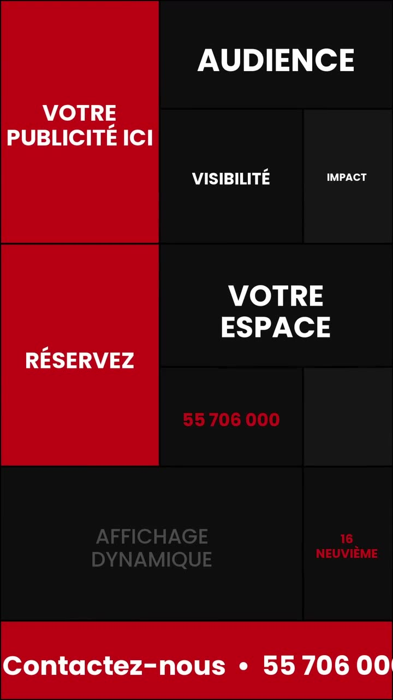
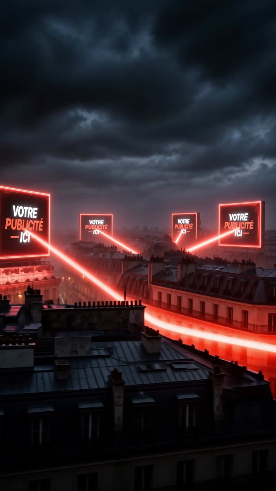
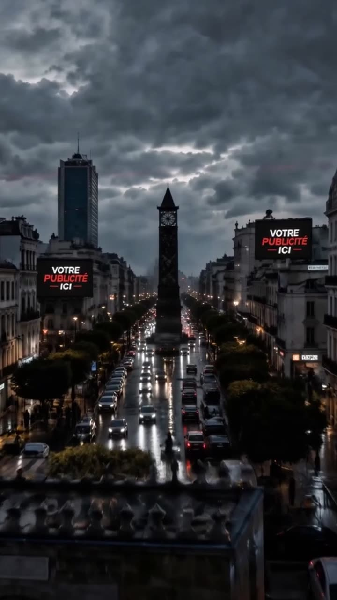

← Portfolio Client · DOOH campaign · 2026
16 Neuvième
A campaign for 16 Neuvième, a Tunisian dynamic-display company. Landscape films for LED billboards, vertical cuts for totem screens, a product visualisation of their display totem and a motion layout of their ad-space network.
AI-assisted production: generation, compositing and edit, delivered in every screen format the network runs.
The video loops were composed in portrait and landscape formats, with each shape developed for its own frame rather than cropped from the other. Production moved from storyboard direction through AI generation and finishing. Claude supported consistent prompting across a sequence, GPT Image 2.0 was used for storyboards, Higgsfield Seedance 2.0 for generation, and DaVinci Resolve for finishing. The main challenge was keeping the subject consistent from shot to shot while adapting the visual to each LED screen shape. The resulting work was accepted for display on LED screens. For a new screen campaign, share orientation, dimensions, viewing distance and approval process before production. The creative process involved about ten generation attempts per loop before the client approved the result.







Frequently asked questions
What kind of work is shown here?
This case study shows AI-assisted campaign films for LED screens, including compositions for landscape billboards and vertical totem screens. Production covered direction, generation, compositing and edit. The work combined campaign imagery with a product visualisation and motion design for a dynamic-display network. The finished deliverables were accepted for LED display.
Why create separate portrait and landscape versions?
Each screen shape was composed for its own frame. Portrait and landscape versions were prompted as separate compositions rather than cropped from one master, helping the visuals use the available screen space. The sequence work also focused on keeping the subject coherent from shot to shot.
Was this project made with Houdini?
No. This production used AI-assisted generation, storyboard direction, compositing and finishing. Houdini and TouchDesigner were not part of the toolchain. Screen-ready loops were developed through a workflow focused on coherent subjects and compositions suited to each display format. Storyboard direction shaped the visual before generation began.